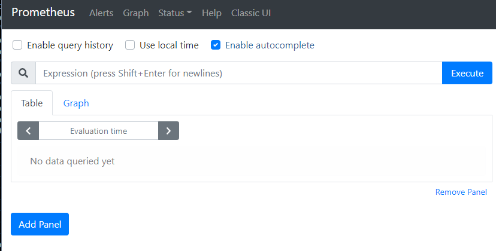
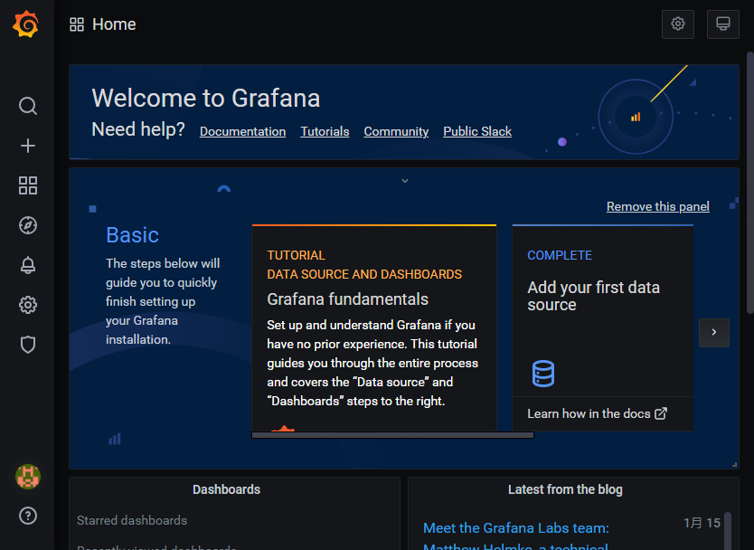
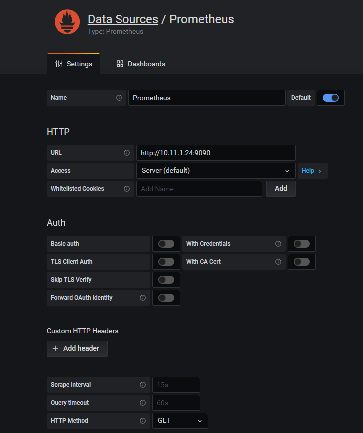
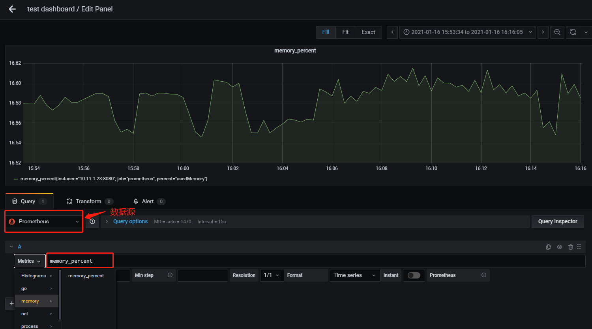

环境
Centos7
Grafana7.3.7
- Prometheus2.24
下载安装Prometheus
1 | wget https://github.com/prometheus/prometheus/releases/download/v2.24.0/prometheus-2.24.0.linux-386.tar.gz |
启动 Prometheus
1 | ./prometheus --config.file=prometheus.yml |
查看是否启动成功 http://ip:9090

修改prometheus 配置文件
1 | scrape_configs: |
下载安装Grafana
1 | wget https://dl.grafana.com/oss/release/grafana-7.3.7-1.x86_64.rpm |
启动
1 | systemctl status grafana-server |
配置文件在/etc/sysconfig/grafana-server
1 | GRAFANA_USER=grafana |
访问Grafana http://ip:3000

添加Data Source

添加 Panel

golang 示例代码
1 | package main |